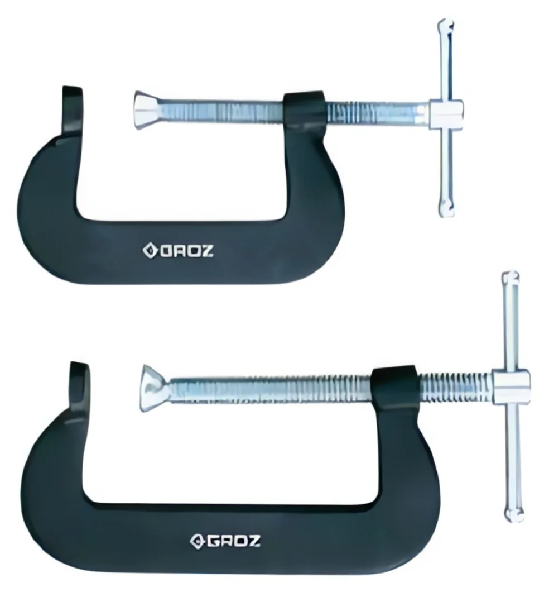

GROZ · Vices & Clamps
G Clamps Junior
CAT NR GCL/FSJ/0-3/N · ORD NR 35735
| CAT NR (catalogue number) | GCL/FSJ/0-3/N |
|---|---|
| ORD NR (order number) | 35735 |
| Box quantity | 84 |
| Capacity (c) (inch) | 3 |
| Capacity (c) (mm) | 75 |
| Frame proof load (kgs) | 500 |
| Frame proof load (lbs) | 1100 |
| Throat depth (D) (inch) | 1-3/8 |
| Throat depth (D) (mm) | 35 |
Ask for a quote The catalogue PDF, page 96
“Ask for a quote” opens this product in the catalogue: add it to your quote and send it. Buyers from Africa, the Gulf and worldwide are welcome; prices in USD, EUR or INR.
From the GROZ Workshop Tools CB-05 catalogue. Not yet verified: these details were read from the printed catalogue automatically; check the catalogue page before ordering.